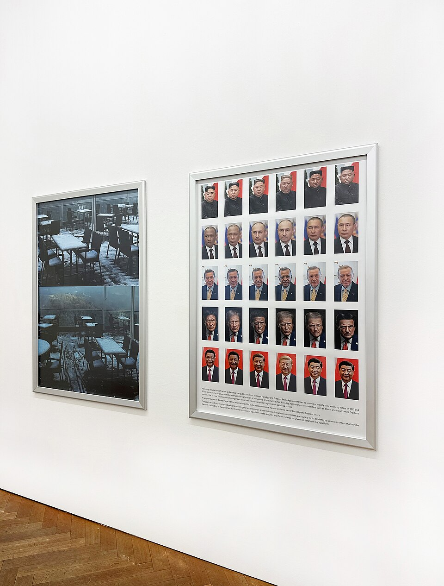
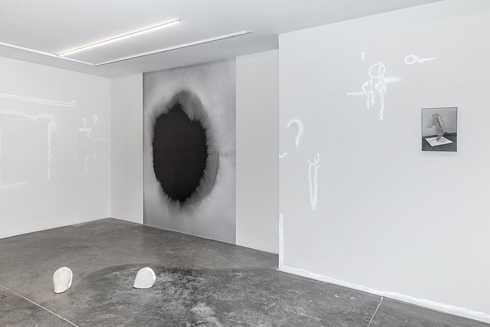
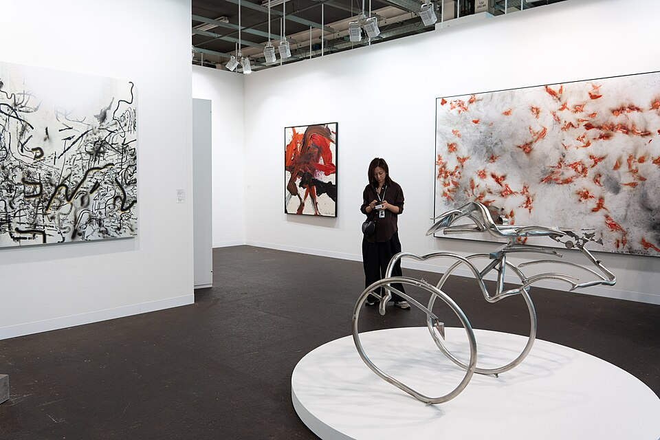

Jan Brož
Světlo na zdi
jaro 2026

malba, 14 obrazů
vernisáž 12. 10. 2026 v 18:00
Marta Kolářová maluje krajinu, kterou si pamatuje, ne tu, kterou vidí. Velká plátna v tlumených barvách vznikla za poslední dva roky v jejím ateliéru na Šumavě. Tiché ozvěny jsou její první samostatnou výstavou v Budějovicích.
Jak k nám
Světlo na zdi
jaro 2026

Práce na papíře
zima 2025

Co k sobě nepatří
podzim 2025

Umělý květ
léto 2025

malba · olej na plátně

objekt · koláž
fotografie · stříbrná želatina
O galerii
Galerie Krajinská pracuje s výtvarníky, kteří už mají něco za sebou, ale nechtějí trávit čas propagací, sociálními sítěmi a jednáním s kupci. Na základě smlouvy za ně připravujeme výstavy, fotografie a texty a jednáme se sběrateli.
Jste autor a hledáte zastoupení? Napište nám a pošlete ukázky své práce.
Fotografie pocházejí z Wikimedia Commons a nezobrazují tuto galerii ani uvedené autory. Byly zmenšeny.
Ausstellungsansicht Werner Schmidt.jpg – Streile-schmidt, CC BY-SA 4.0
Silent Spring, Clare Woods, Buchmann Galerie, 2023.jpg – Ulicaa, CC BY-SA 4.0
Ausstellungsansicht Hildesheim.jpg – Photo: Möndel; Artwork: Sibylle Möndel, CC BY-SA 3.0 de
ARTISTIC INTELLIGENCE 25 years of Wikipedia exhibition in Bern Ausstellungsansicht.jpg – GalerieGlaab, CC BY-SA 4.0
Christiane Peschek, Artificial Bloom .jpg – Postinternetarthistorian, CC BY-SA 4.0
White Cube Gallery C13 at Art Basel 2025 2.jpg – Kalai Ramu, CC BY-SA 4.0
Amy Hughes Artist Studio Portrait.jpg – Officiallyamy, CC BY-SA 4.0
Ausstellungsansicht STAMPA Basel, Zusammenbringen was nicht zusammengehört, Monika Dillier 1.jpg – Helga Broll, CC BY-SA 4.0